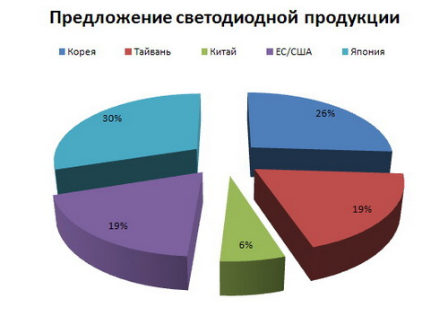

TOP-10 Мировых производителей светодиодных ламп


Глобальный рынок светодиодов высокой яркости (HB-LED) вырос с 11,3 млрд.
долл. в 2010 году и до 12,5 млрд. долл. в 2011 году. Согласно
результатам исследования Strategies Unlimited, в относительном выражении
рост ставил 9,8%. Спрос на светодиодные системы освещения в
рассматриваемом периоде вырос на 44% до 1,8 млрд. долларов. Тайваньские и
китайские поставщики в 2011 году увеличили свою долю рынка за счет
других регионов. Доля Китая выросла с 2% до 6% в силу роста внутреннего
рынка страны, а также за счет улучшения качества светодиодной продукции.
Корейские компании потеряли долю, несмотря на агрессивную политику по
увеличению объемов производства в 2010 году. Доля Японии упала. Рост
Philips Lumileds, Cree, Osram и Osram Optoelectronics в области
производства 6-дюймовых подложек замедлился. Osram Optoelectronics
удалось разработать светодиоды очень удачной конструкции, что
стимулировало рост объемов продаж до 1 млрд. долларов.
На 10 компаний, представленных в данной статье, приходится более 68% мирового предложения светодиодов
- Nichia Corporation - инженерно-химическая производственная компания со штаб-квартирой в Токусима, Япония. Специализируется на производстве и продаже люминофоров, в том числе светодиодов (LED), лазерных диодов, материалов для аккумуляторных батарей, а также хлористого кальция. Nichia Corporation состоит из двух подразделений. Первое ведет разработку и производство люминофоров и других химических веществ. Втрое ответственно за светодиоды. www.nichia.co.jp
- Samsung LED - производитель светодиодной продукции из Южной Кореи. Является совместным предприятием корейской Samsung и японской Sumitomo Chemical. Осуществляет научные исследования и разработки, производство и продажу сапфировых подложек для светодиодов. samsungled.com
- Osram Opto Semiconductors - немецкая компания со штаб-квартирой в Регенсбурге. Является дочерней компанией Osram GmbH и второй в мире по объему производства оптоэлектронных полупроводников. Одним из основных продуктов компании являются светоизлучающие диоды (СИД). Она также производит лазерные диоды высокой мощности, инфракрасные компоненты и оптические датчики. Компания была основана в 1999 году как совместное предприятие Osram и Infineon Technologies. www.osram-os.com
- LG Innotek - подразделение группы компаний LG. Занимается производством компонентов светоизлучающих диодов (LED). На основе ее компонентов создаются яркие и энергосберегающие лампы освещения и другие продукты, которые функционируют с меньшими затратами. www.lginnotek.com
- Seoul Semiconductor - корейская компания по производству светодиодных устройств. Акции компании котируются на KOSDAQ. Компания производит корпуса для светодиодов на двух заводах в городе Ансан, Корея. Общая мощность производства составляет 4 млрд. корпусов в месяц. www.acrich.com
- Cree Inc. - многонациональной производитель полупроводниковых материалов и приборов со штаб-квартирой в Дареме, США. Компания постоянно ведет исследования и разработки в области светодиодной продукции. Сейчас Cree производит высоковольтные SiC диоды Шотки с напряжением 300…1700В и током до 20А по технологии ZERO RECOVERY с нулевым временем обратного восстановления, СВЧ полевые транзисторы, а также кристаллы для светодиодов и полупроводниковых лазеров синего и ультрафиолетового диапазона. www.cree.com
- Philips Lumileds Lighting Company - является производителем широкого спектра светоизлучающих диодов (СИД). В данный момент единственным владельцем компании является Philips Lighting. Lumileds Lighting BV была создана в ноябре 1999 года как совместное предприятие Philips Lighting и Agilent Technologies. Последняя была филиалом Hewlett-Packard. На момент образования между компаниями было равноправное партнерство: обе владели 50% акций Lumileds Lighting. В августе 2005 года Philips получила контрольный пакет акций Lumileds, когда она приобрел 47% акций компании Agilents за 950 миллионов долларов. www.philipslumileds.com
- Sharp - японская многонациональная корпорация, которая разрабатывает и производит электронные продукты. Штаб-квартира находится в Осаке, Япония. В Sharp было занято около 55580 человек по всему миру по состоянию на июнь 2011 года. Компания была основана в сентябре 1912 года. С тех пор она превратилась в одну из ведущих компаний в мире электроники. Линейка светодиодной продукции Sharp насчитывает более 100 осветительных модулей. www.sharpleds.com
- TG-Light Optoelectronic - тайваньский производитель светодиодов для осветительных ламп. Компания предлагает клиентам различные варианты светодиодов, а также системы управления освещением. Продукция TG-Light Optoelectronic включает в себя уличные фонари, лампы дневного света, настенные светильники, лампы для проекторов и все виды альтернативных источников света. Штаб-квартира компании находится в Чжунхэ Сити, Тайпей. Главный завод площадью 3500 квадратных метров расположен в городе Цзянмэнь, провинция Гуандун, Китай. en.tg-light.com
- Everlight Electronics - тайваньская компания, которая производит светоизлучающие диоды (СИД). Это седьмая по объему производства компания в мире. Штаб-квартира находится в городе Тайбэй. Everlight Electronics была основана в 1983 году. Изначально она занималась производством светодиодов для бытовой техники. К 2006 году Everlight была крупнейшим производителем светоизлучающих диодов на Тайване. Компания выпускала 1.850 миллиарда единиц в месяц. На ее фабриках трудились 4000 человек. В 2007 году 40% своих доходов Everlight получила от продажи светодиодов для подсветки мобильных телефонов, она также начала осваивать светодиоды для подсветки мониторов портативных компьютеров и телевизоров. www.everlight.com
Теперь рассмотрим различные сегменты ранка светодиодов
Светодиоды для экранов мобильных устройств. Этот сегмент остался на прежнем уровне. Объем продаж не превысил 3.4 миллиарда долларов. Общее сокращение рынка LED-дисплеев для мобильных телефонов было компенсировано резким ростом популярности планшетов. Одним из важнейших событий в этом сегменте является переход к органическим светодиодам (OLED). Отметим, что около 50% дисплеев смартфонов, как ожидается, будут создаваться на базе светодиодов уже в 2016 году.Подсветка экранов телевизоров и мониторов. Доход производителей, работающих в этом сегменте, составил 3 млрд. долл. в 2011 году. Но, согласно прогнозам, он существенно упадет к 2016 году. Основным негативным фактором в этом сегменте является внедрение недорогих технологий прямой подсветки, ориентированных на ЖК-телевизоры с диагональю меньше 42 дюймов.
Освещение. Спрос на светодиодные компоненты для осветительных систем вырос с 1,2 млрд. долл. в 2010 году до 1,8 млрд. долл. в 2011 году. Рынок светодиодных светильников вырос до 9,3 млрд. в 2011 году - увеличение на 45% по сравнению с 2010 годом. В течение следующих пяти лет в этом сегменте ожидается существенный рост, но рост выручки производителей будет гораздо ниже из-за ценового давления.
Автомобилестроение. Доход достиг 1 млрд. в 2011 г. Аналитики ожидают, что в следующие 5 лет среднегодовой темп роста спроса на светодиодные фары будет находиться в пределах 34%. Это часть тренда по переходу отрасли на светодиоды. Кроме того, подобные устройства обеспечивают больше возможностей для дизайнеров и позволяют снизить общую стоимость эксплуатации системы освещения авто.